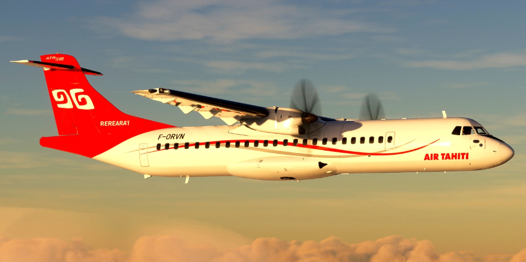

Para lograr un vuelo seguro y eficiente es fundamental contar con un sistema adecuado para controlar la aeronave, en este caso el ATR 72-600. Esto se consigue mediante los sistemas de control de vuelo, los cuales están conformados por un conjunto de superficies que trabajan juntas para dirigir y estabilizar la aeronave. Estas se dividen en tres grupos: superficies primarias (alerones, elevadores y timón), superficies secundarias (aletas de compensación) y superficies de alta sustentación (flaps y slats).
Existen diversas maneras de construir un sistema para este propósito; la más común en aeronaves antiguas y de pequeño tamaño es el sistema de cables y poleas, debido a la simplicidad de fabricación, bajo peso en comparación con un sistema hidráulico y su funcionamiento independiente de computadoras de vuelo, convirtiéndolo en una opción ideal de un sistema óptimo para aeronaves ligeras con bajos costos operativos.
El sistema de control de vuelo utiliza cables que se conectan mecánicamente a las superficies de control, se dirigen directamente a la cabina y dependen de la fuerza que ejerce el piloto sobre los mandos para mover dichas superficies de control.
El objetivo principal de este proyecto es realizar un sistema de control de vuelo basado en cables y poleas, empleando servomotores SG90 que simularán la acción del piloto desde la cabina, mediante un control remoto Rc, modelo FS-i6X con receptor FS-iA10B de 10 canales que opera a una frecuencia de 2,4 Ghz; el transmisor enviara señales al receptor, el cual se encargará de activar los servomotores conectados a las superficies de control mediante cables y esto se moverán gracias al control Rc, teniendo una buena representación de cómo se montaría un sistema de este tipo en la vida real, por otro lado, también se puede decir que este es un híbrido entre un sistema con actuadores mecánicos y un sistema con cables, en donde hay una central en donde se encuentran los servos y estos mueven a las superficies de control por medio de los cables.
Como objetivo secundario del proyecto se diseñara e implementara un sistema de luces aeronáuticas compuesto por las luces de navegación, beacon y estroboscópicas conectadas a una protoboard de 85mmx55mm que contiene pines energizados, resistencias de 330 Ohms, cables UTP, potenciómetro 100K Ohm, NE555, capacitor de 10 microF, 8 luces led: 3 rojas, 1 verde y 4 blancas; que simulan el comportamiento real de este sistema en una aeronave enfatizando aspectos críticos como la visibilidad, prevenciones y cumplimiento de las normativas aeronáuticas.
En esta sección se abordará la importancia de los sistemas de control de vuelo y los sistemas de luces aeronáuticos, con el propósito de contextualizar el desarrollo del modelo funcional basado en el ATR 72-600. Esta aeronave es un avión comercial bimotor turbohélice diseñado para viajes regionales y trayectos de corta duración. Fabricado por Airbus de Francia y Aeritalia de Italia, se dio a conocer el primer ATR 72 en 1985 y realizó su primer vuelo el 27 de octubre de 1988, posteriormente el 2 de octubre de 2006, el CEO de ATR anunció el lanzamiento de la nueva aeronave serie 600 incorporando los últimos avances tecnológicos, mayor eficiencia operativa y fiabilidad considerado uno de los aviones regionales más modernos en el mundo de la aviación.
Sistema de control de vuelo
Es parte esencial de cualquier aeronave y está diseñado para dirigir y gestionar su comportamiento durante el despegue, el vuelo y el aterrizaje. Su función principal es asegurar la estabilidad, la maniobrabilidad y la seguridad evitando situaciones de pérdida o salida de control. Este sistema está compuesto por varios elementos fundamentales, entre ellos: la computadora de control de vuelo, las superficies de control, los sensores y los actuadores.
Computadora de control de vuelo
Este componente utiliza los datos recopilados por los sensores para determinar los comandos necesarios que permitan controlar los enlaces mecánicos por señales electrónicas siendo más precisos y mantener la estabilidad de la aeronave. En los sistemas modernos como el fly-by-wire, la computadora también reemplaza los enlaces mecánicos.
Superficies de control
Son mecanismos móviles ubicados en los extremos de las alas y en el estabilizador horizontal y vertical. Los comandos generados por la computadora de control de vuelo se transmiten a estas superficies permitiendo así el control de los tres ejes de la aeronave: eje longitudinal (alerones), eje lateral (elevadores) y eje vertical (timón de dirección).
Sensores y actuadores
Estos componentes se encuentran distribuidos principalmente en el Air Data System (ADS), el cual está conformado por tomas de presión estática y tomas de presión total, conocidas como tubo pitot, ubicadas a ambos lados del fuselaje, cerca de la nariz del avión. Estas miden la presión atmosférica para calcular la altitud barométrica y la velocidad indicada. El sistema también incluye sensores de temperatura total (TAT) que permiten determinar la velocidad verdadera (TAS) considerando la temperatura y densidad del aire. Todos estos datos son procesados por el Air Data Inertial Reference System (ADIRS) que integra la información del ADS y de los sensores inerciales para ofrecer parámetros precisos a la computadora de control de vuelo.
Sistemas de luces aeronáuticas
Este sistema proporciona iluminación para el exterior e interior de la aeronave. En esta sección se abordarán únicamente las luces exteriores, las cuales son fundamentales para operaciones como el aterrizaje nocturno, rodaje en tierra y la prevención de colisiones en el aire. Este sistema contiene luces de navegación (posición), las luces beacon (anticolisión roja) y las luces estroboscópicas (anticolisión blanca).
(1) Luces de navegación (posición)
Estas luces indican la orientación y dirección de la aeronave. Son esenciales para que otras aeronaves puedan identificar su ubicación y sentido de desplazamiento, a su vez alertando a otras aeronaves cumpliendo con los requisitos mínimos de las regulaciones internacionales de aviación.
Se ubican de la siguiente manera:
Luz roja: En el extremo del ala izquierda
Luz verde: En el extremo del ala derecha
Luz blanca: En el cono de la cola
(2) Luces beacon (Anticolisión roja)
Son luces de color rojo intermitente que se activan para evitar colisiones y alertar la tripulacion y al personal de tierra de que la aeronave esta activa o en movimiento. Están ubicadas en la parte superior e inferior de la aeronave deben permanecer encendidas desde el momento en que se activan los sistemas eléctricos o motores hasta su apagado total.
(3) Luces estroboscópicas (Anticolisión blanca)
Son luces blancas que emiten destellos intermitentes de alta intensidad para aumentar la visibilidad de una aeronave en caso de neblina, sirve para disuadir aves en la trayectoria de vuelo evitando incidentes con fauna, se encuentran en los extremos de las alas y en la cola de la aeronave.
Para el desarrollo del sistema de control de vuelo por cable y el sistema de iluminación se elaboró una estructura a escala del ATR 72-600 con dimensiones de … Se utilizaron materiales ligeros como plástico de botella, periódico, porcelanicrón, cartón, bajalenguas, palos de pincho y componentes mecatrónicos para garantizar la facilidad del montaje.
Se conectaron tres servomotores al receptor del control inalámbrico realizando pruebas funcionales del movimiento de cada superficie. Para el sistema de iluminación se elaboró un diagrama considerando la ubicación y función de cada tipo de luz.
Fig. 1. Top view of the control system
Como se puede ver en la figura 1, el sistema está compuesto por 3 servos, cada uno unido a una superficie que controla uno de los ejes de giro de la aeronave (alabeo, cabeceo y guiñada). Para facilitar la explicación del sistema, se dividirá en tres subsistemas, como se muestra en la figura 1.
El servo de alabeo está conectado a dos superficies de control (ambos alerones), se montaron de esa manera para que la sincronización del movimiento de ambos sea lo más sencilla posible y solo se requiere un servo para mover ambos alerones.
El servo de cabeceo está conectado a un eje en el que están montados ambos elevadores, funcionando como una sola superficie, lo que facilita mucho que ambos tengan el mismo ángulo de deflexión al mismo tiempo.
El timón de cola se controla mediante el servo de guiñada, que consta de dos cables que se conectan a cada lado del timón, de modo que cuando se requiere un movimiento de guiñada hacia la derecha, se "tira" del cable derecho para que el timón se mueva hacia la derecha, como se muestra en la figura 2.
Fig. 2. Yaw servo and rudder working
Dado que el sistema está montado en el modelo de un ATR-72 y este avión tiene cola en T, se requiere un montaje como el que se muestra en la figura 3.
Las dos poleas o rodamientos son necesarios para transmitir el movimiento de forma óptima y minimizar la pérdida de fuerza transmitida, para que el sistema sea lo más eficiente posible y no sea necesario forzar el servo, lo que generaría un mayor desgaste.
Fig. 3. Mounting the elevator cables
En el caso de los alerones, se requiere tirar del cable por encima de uno de estos mientras que por el otro lado se tira del cable por debajo, esto se logra gracias al montaje mostrado en la figura 4, induciendo un alabeo hacia la izquierda.
Este movimiento deja el sistema en un estado como el mostrado anteriormente, lo que provoca que el alerón izquierdo suba reduciendo la sustentación en esa ala, mientras que el alerón derecho baja aumentando la sustentación en el ala derecha y generando así el alabeo.
Fig. 4. Mounting the roll servo
Fig. 5. Left aileron while rolling to the left
(Aquí se puede incluir el detalle del diseño del circuito eléctrico.)
(Aquí se pueden detallar las pruebas realizadas al sistema y sus resultados.)